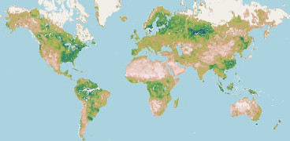
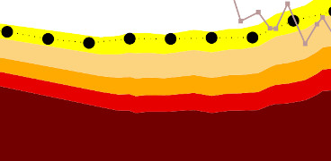
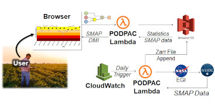

We begin by staging historical SMAP Level 3 data in a cloud-optimized (Zarr) storage format.
This is an important step to enable rapid computation and on-the-fly computation of drought categories.
NASA is actively pursing cloud storage of their datasets, in which case this step would no longer be required.

Next, we develop a PODPAC processing pipeline to compute Drought Categories based on historical soil moisture data. This pipeline:
(1) Normalizes the absolute SMAP soil moisture to relative soil moisture (in [0, 1]) by dividing the soil moisture by the porosity.
(2) For each day-of-the year, finds soil moisture data within a 45-day window (data spanning multiple years)
(3) Fits a Beta distribution to the data to get a probability density function for that day-of-the-year.
(4) Compute percentiles [0.3, 0.2, 0.1, 0.05, 0.02] representing drought severity categories.

Then, using PODPAC, we seamlessly transition our developed algorithm to execute on up to 1000 concurrent AWS Lambda functions, allowing the computation for the world within a few hours.
Following this, we compute drought categories on-demand from the SMAP L3 soil moisture data and our computed categories to display the US and World maps.